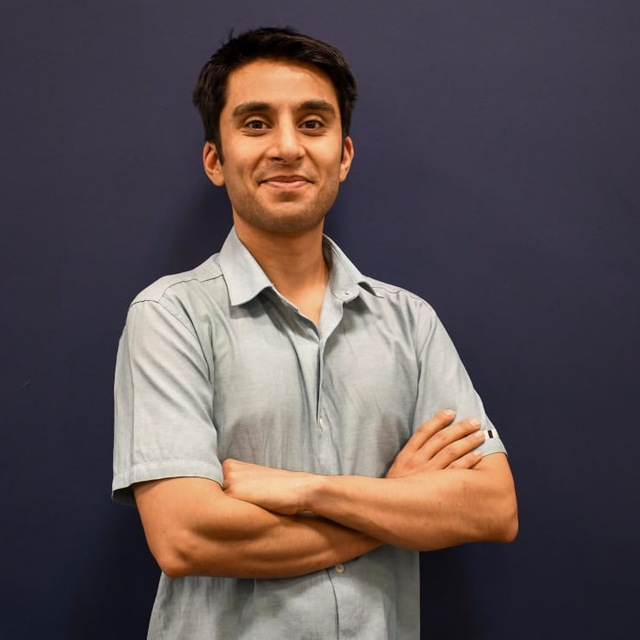

I received my Master from Shaheed Rajaee university(Tehran, Iran), and currently doing neuroimaging research under the supervision of Dr. Reza Ebrahimpour and Dr.S. Hamid Amiri.
I use GLMs to better understand the brain activities in high and low cognitive load while continues multimedia is being played. My main interest is using computational method to do model-driven research on neural data. In addition, I'm intrested in develping and improving methods of analayzing neuroimaging data.
In my spare time, I enjoy watching night sky, hiking/cycling in nature, and learning.
2019 - 2022 [content] Machine learning, Evolutionary computation, Stochastic process, Pattern recognition, multi-agent system, Image processing, and Fuzzy sytesm, Neural networks.
2013 - 2017 [content] Minor change with the given link, the original is availbe on request.
Online course, 2022
[content]
Topics covered: Modeling practice, Model fitting, GLMs, Dimensionality reduction, Bayesian statistics, Linear dynamical systems, Markov process, Decision making, Hidden Markov models, Kalman filter, Optimal control, Markov decision process, Reinforcement learning, Modeling real neuron, Modeling neuronal networks using Wilson-Cowan model, Causality, Deep learning (with Pytorch), Autoencoders
[course page]
[certificate]
I have great experience working with EEG data while studying the dynamic and topography of neural components. First I use EEGLAB and its plugins such as Clean Rawdata ASR, ICLabel and Adjust to preprocess the data then I use mTRF toolbox to run cross validation and finding best temporal response function to predict real data. I have learned these by EEGLAB and CNSP workshops.
| Title | Supervisor(s) | Stage | Methods |
|---|---|---|---|
| Effect of cognitive load on Audio Envelope and Word Frequency | Dr. Reza Ebrahimpour Dr. S. Hamid Amiri Dr. Alireza Bosagh Zadeh |
manuscript submitted |
EEGLAB, mTRF toolbox |
| Comparing cortical brain activity from real and imaginary movements of hand (Miler dataset - ECOG) | Dr. Vladimir Litvak Dr. Samuel Zibman Mohammad Rabiei |
presented in NMA | MNE python |
| Predicting activities of V4 area from natural images. (Kay dataset - fMRI) | Dr. Ehsan Rezayat Raul Hernandez |
presented in NMA | scikit learn |
| Persian hand written digits recognition using machine learning and deep learning tools | Dr. Reza Ebrahimpour | Passed | python |
| Bachelor finial project: Making an educational multimedia and a hand book for python in Persian | Dr. Samira Noferesti | Published | Latex, Making educational multimedia |
| Online library management system | maktabkhooneh.org | Passed |
Django |